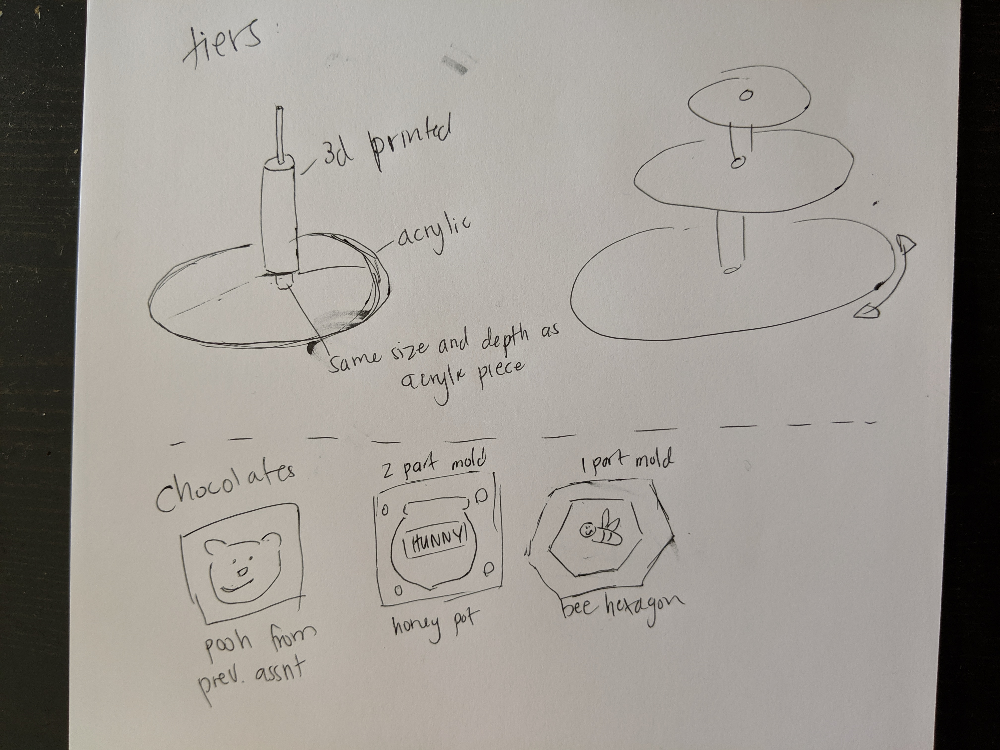
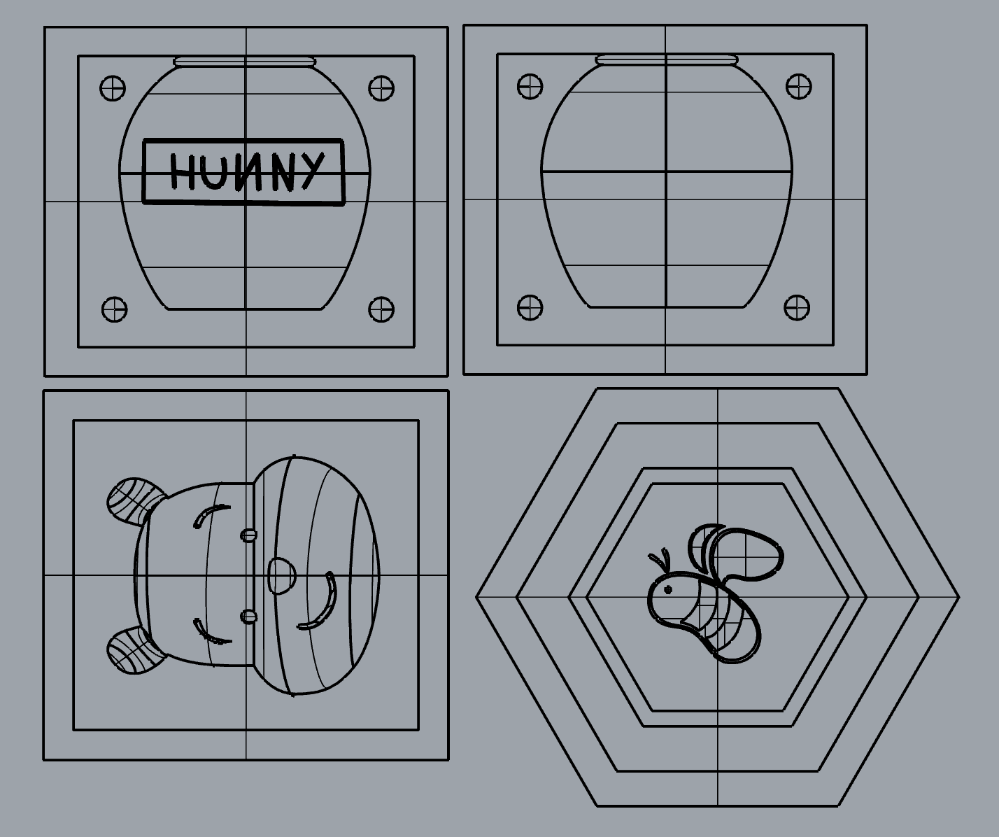
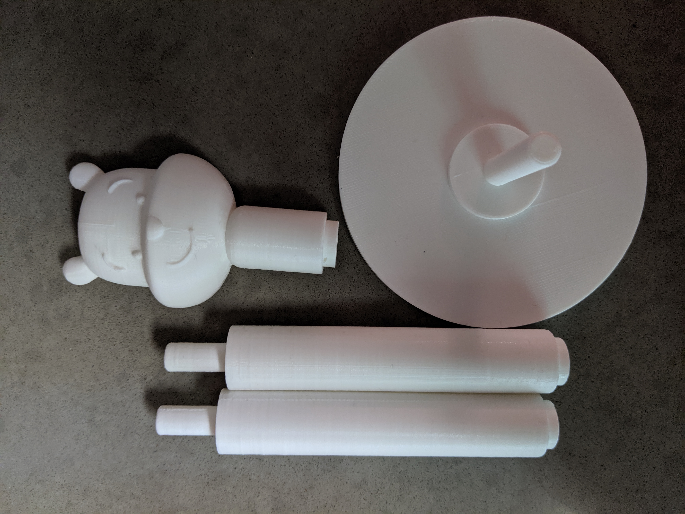
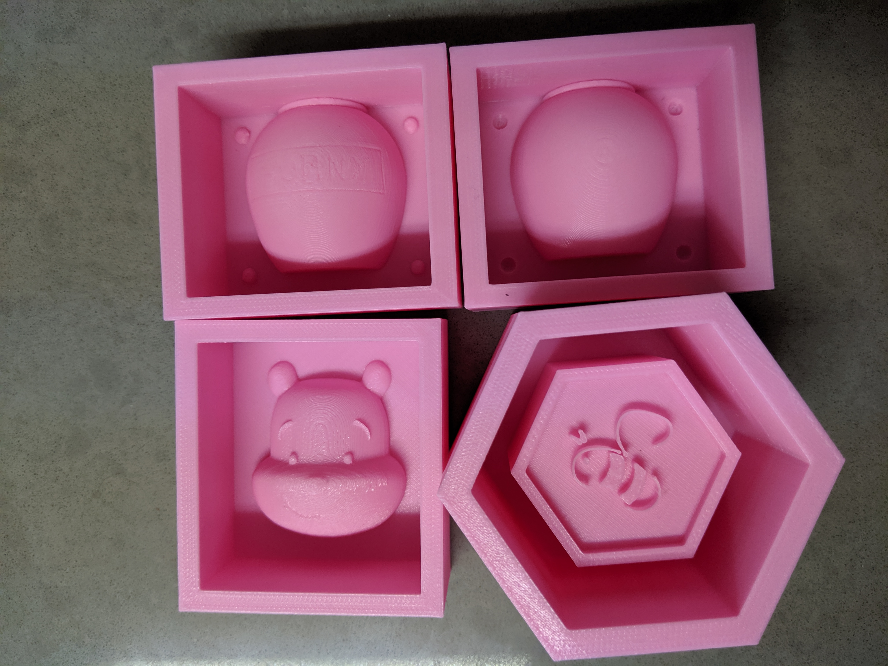
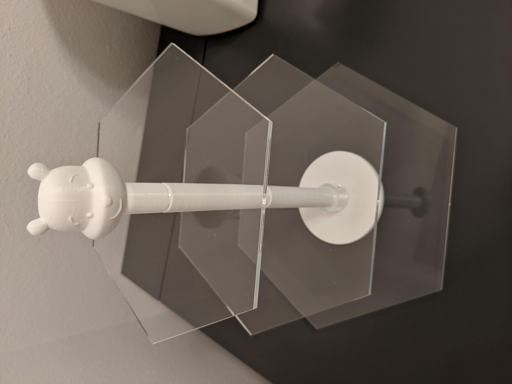
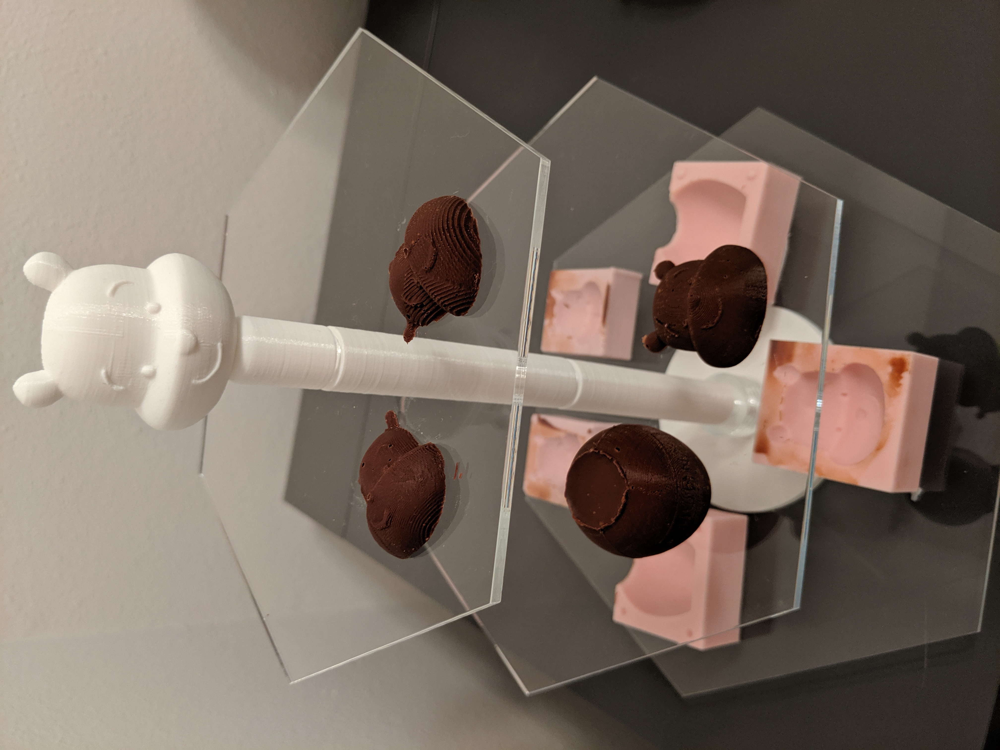
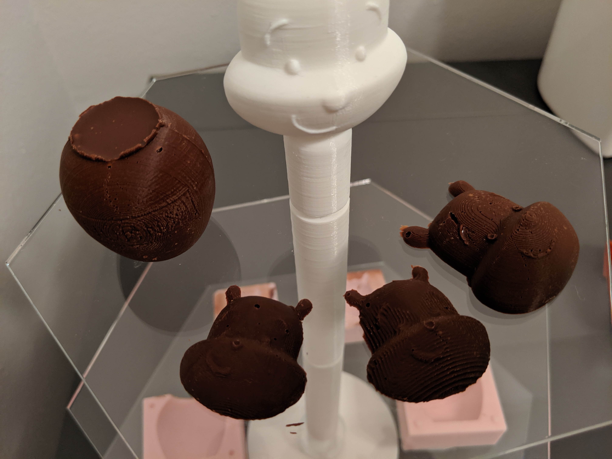

The goal of my final project is to make a tiered tea tray with some chocolates. I looked for some inspiration on pinterest for simple tiered kits. I want my tiers to swivel so I looked up more inspiration on thingiverse and came across this rotating organizer. I plan to copy the connecting mechanism to achieve the same spin.
Please excuse my horrible drawing skills

My Plan
Bill of Materials
The following are commands that I learned to create my model:
handlecurve - similar to drawing in illustrator
editpton - editing points
pipe - to give curves a thickness
boolean difference and union are opposite for pipes
project - to project a curve onto a surface in order to match contour
(how I did the honey pot letters)
First I drew the tiers in Rhino.
Then I drew the molds in Rhino using the handlecurve commands to draw similar to illustrator. I also learned project and thats how I got the letters of the honey pot to sit on the surface of the pot. I drew the letters then projected them to the pot and then used pipe to add thickness to the letters.
3D PrintingI had some trouble 3D printing because when I first started I originally wanted to print at Fluke. The first time I went to print I wasn't sure which printer to use and they had me on the FlashForge printer. When I came back my print had failed :(. The second time I went every single printer was being used so I had to leave. I finally decided on Saturday that I needed to start and went to the Mill. Our class filament was being used and the mill had run out of filament to buy. When I started asing around Andy was nice enough to let me do my tier parts with his filament. I also talked to Nitya who let me buy the rest of her spool from her to print my molds :).
 I printed my tiers connectors and base successfully. They fit together ok but there is a little wiggle room in the connectors that makes my tiers a little wobbly. Also, for the base I forget I accidentally made the connector part too tall and so the other connector sits higher than I would like.
Laser Cutting
In order to get a really snug fit I did some hole testing by cutting out different sized holes in my acrylic and testing it with my connector.
14.8 mm was the magic number to get a good fit.
I exported as an illustrator file and cut out my acrylic without any problems.
Per Omari's advice, I used the following setting for the laser cutter:
100 power, 100 frequency, 8 speed
I used this food safe silicone that I bought for our previous casting and molding assignment. Part A to B mix is 10 to 1. It cures for 24 hours and then you bake it at 212 degrees fahrenheit for 4 hours. I ended up not using the bee mold because it was very difficult to get out of the 3d print and I ended up damaging the mold while I was taking it out. The other molds came out fine and I also used my smaller molds from my previous assignment for the chocolate.
Final AssemblyHere is the finished product.
  